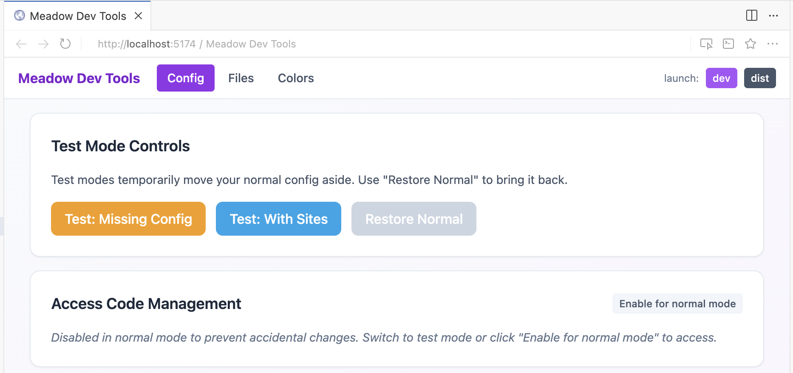

dev_tools_app
the dev_tools_app makes testing the edge cases easier because it modifies the app config and site config to make it easier to test onboarding and doing things the first time.
To support meadow manual QA and verification

the dev_tools_app makes testing the edge cases easier because it modifies the app config and site config to make it easier to test onboarding and doing things the first time.
To support meadow manual QA and verification
